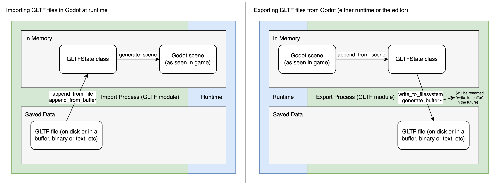
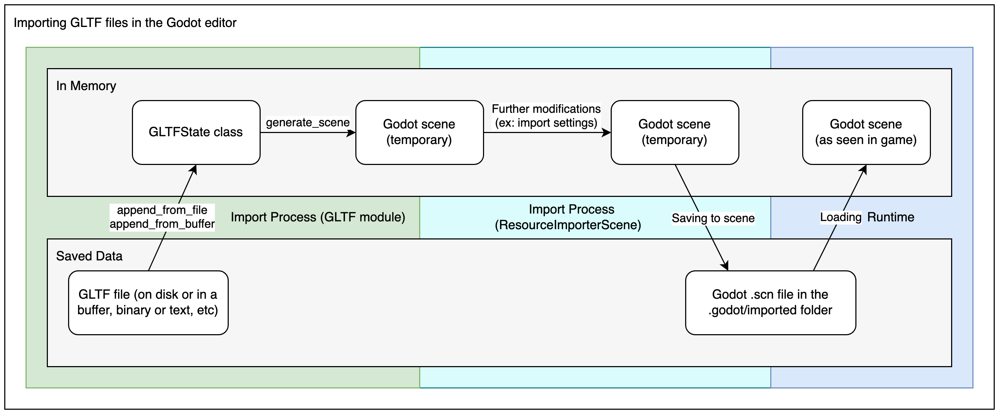
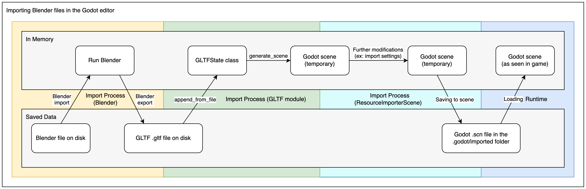
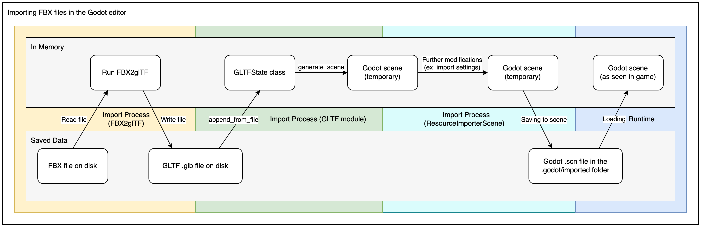

Các định dạng 3D có sẵn
Khi làm việc với asset 3D, Godot có một trình import linh hoạt và dễ cấu hình.
Godot làm việc với scene. Điều này có nghĩa là toàn bộ scene bạn đang làm trong phần mềm dựng hình 3D yêu thích sẽ được chuyển sang một cách sát nhất có thể.
Godot hỗ trợ các định dạng tệp scene 3D sau:
glTF 2.0 (khuyến nghị). Godot hỗ trợ cả định dạng văn bản (
.gltf) lẫn nhị phân (.glb)..blend(Blender). Cách này hoạt động bằng cách gọi Blender để xuất ra glTF một cách trong suốt (yêu cầu đã cài đặt Blender).DAE (COLLADA), một định dạng cũ hơn vẫn được hỗ trợ.
Định dạng OBJ (Wavefront) + các tệp material MTL đi kèm. Định dạng này cũng được hỗ trợ, nhưng khá hạn chế do giới hạn của chính định dạng (không hỗ trợ pivot, skeleton, hoạt ảnh, UV2, material PBR, ...).
FBX, được hỗ trợ thông qua thư viện ufbx. Quy trình import trước đây dùng tích hợp FBX2glTF. Cách này yêu cầu cài đặt một chương trình bên ngoài liên kết với FBX SDK độc quyền, vì vậy chúng tôi khuyến nghị dùng phương thức ufbx mặc định hoặc các định dạng khác được liệt kê ở trên (nếu phù hợp với quy trình làm việc của bạn).
Sao chép tệp scene cùng với texture và dữ liệu mesh (nếu tách riêng) vào kho lưu trữ dự án, rồi Godot sẽ thực hiện import đầy đủ khi cửa sổ trình chỉnh sửa được focus.
Xuất tệp glTF 2.0 từ Blender (khuyến nghị)
Có 3 cách để xuất tệp glTF từ Blender:
Dưới dạng tệp glTF nhị phân (
.glb).Dưới dạng tệp glTF văn bản với dữ liệu nhị phân và texture tách riêng (tệp
.gltf+ tệp.bin+ các texture).
Tệp glTF nhị phân (.glb) là lựa chọn nhỏ gọn hơn. Chúng bao gồm mesh và texture đã thiết lập trong Blender. Khi đưa vào Godot, các texture là một phần của tệp material của đối tượng.
Có hai lý do để dùng glTF với texture tách riêng. Thứ nhất là để có phần mô tả scene ở định dạng văn bản và dữ liệu nhị phân trong một tệp nhị phân riêng. Điều này hữu ích cho quản lý phiên bản nếu bạn muốn xem lại các thay đổi ở định dạng văn bản. Thứ hai là bạn cần các tệp texture tách riêng khỏi tệp material. Nếu bạn không cần cả hai điều đó, tệp glTF nhị phân là đủ.
Quy trình import glTF trước tiên tải dữ liệu của tệp glTF vào một lớp GLTFState trong bộ nhớ. Dữ liệu này sau đó được dùng để tạo một scene Godot. Khi import tệp lúc chạy, scene này có thể được thêm trực tiếp vào cây. Quy trình xuất thì ngược lại: một scene Godot được chuyển thành lớp GLTFState, rồi tệp glTF được tạo ra từ đó.

Khi import tệp glTF trong trình chỉnh sửa, có thêm hai bước. Sau khi tạo scene Godot, lớp ResourceImporterScene được dùng để áp dụng các cài đặt import bổ sung, bao gồm các cài đặt bạn đặt qua Import dock và hộp thoại Advanced Import Settings. Kết quả sau đó được lưu thành một tệp scene Godot, và đây chính là thứ được dùng khi bạn chạy/xuất game.

Cảnh báo
Nếu mô hình của bạn chứa blend shape (còn gọi là "shape key" và "morph target"), cài đặt xuất glTF Data > Armature > Export Deformation Bones Only cần được đặt thành Enabled.
Nếu vẫn xuất các xương không biến dạng (non-deforming bone) thì sẽ dẫn đến đổ bóng (shading) sai.
Ghi chú
Các phiên bản Blender cũ hơn 3.2 không xuất texture phát sáng (emissive) cùng tệp glTF. Nếu mô hình của bạn dùng loại texture này và bạn đang dùng phiên bản Blender cũ, nó phải được đưa vào riêng.
Theo mặc định, Blender tắt backface culling trên material và sẽ xuất material sao cho khớp với cách chúng kết xuất trong Blender. Điều này có nghĩa là material trong Godot sẽ có cull mode là Disabled. Việc này có thể làm giảm hiệu năng vì mặt sau vẫn được kết xuất, ngay cả khi chúng bị các mặt khác che khuất. Để khắc phục, hãy bật Backface Culling trong tab Materials của Blender, rồi xuất lại scene sang glTF.
Import trực tiếp tệp .blend trong Godot
Ghi chú
Tính năng này yêu cầu Blender 3.0 trở lên. Để có kết quả tốt nhất, chúng tôi khuyến nghị dùng Blender 3.5 trở lên, vì phiên bản này có nhiều bản sửa lỗi cho trình xuất glTF.
Bạn được khuyến nghị mạnh mẽ dùng bản phát hành Blender chính thức tải từ blender.org, thay vì gói của bản phân phối Linux hoặc Flatpak. Điều này tránh được mọi vấn đề liên quan đến đóng gói, chẳng hạn các phiên bản thư viện khác nhau có thể gây không tương thích, hoặc các hạn chế sandbox.
Trình chỉnh sửa có thể import trực tiếp tệp .blend bằng cách gọi chức năng xuất glTF của Blender một cách trong suốt.
Điều này giúp bạn lặp lại công việc trên scene 3D nhanh hơn, vì bạn có thể lưu scene trong Blender, alt-tab về Godot rồi thấy ngay các thay đổi. Khi làm việc với quản lý phiên bản, cách này cũng hiệu quả hơn vì bạn không còn cần commit bản sao tệp glTF đã xuất vào hệ thống quản lý phiên bản.
Để dùng tính năng import .blend, bạn phải cài đặt Blender trước khi mở trình chỉnh sửa Godot (nếu mở một dự án đã có sẵn tệp .blend). Nếu bạn để Blender ở vị trí cài đặt mặc định, Godot sẽ có thể tự động phát hiện đường dẫn của nó. Nếu không, hãy cấu hình đường dẫn tới tệp thực thi Blender trong Editor Settings (Filesystem > Import > Blender > Blender Path).
Nếu bạn giữ tệp .blend trong thư mục dự án nhưng không muốn Godot import chúng, hãy tắt Filesystem > Import > Blender > Enabled trong Project Settings nâng cao.
Quy trình import .blend chuyển đổi sang glTF trước, nên nó vẫn dùng mã import glTF của Godot. Do đó, quy trình import .blend giống với quy trình import glTF, nhưng có thêm một bước ở đầu.

Ghi chú
Khi làm việc nhóm, hãy lưu ý rằng việc dùng tệp .blend trong dự án sẽ yêu cầu tất cả thành viên trong nhóm phải cài đặt Blender. Dù Blender được tải miễn phí, điều này có thể gây thêm trở ngại khi làm việc với dự án. Tính năng import .blend cũng không có trên trình chỉnh sửa Android và web, vì các nền tảng này không thể gọi chương trình bên ngoài.
Nếu điều này gây khó khăn, hãy cân nhắc dùng scene glTF được xuất từ Blender.
Xuất tệp DAE từ Blender
Blender có hỗ trợ COLLADA tích hợp sẵn, nhưng nó không đáp ứng đúng nhu cầu của game engine và không nên được dùng nguyên trạng. Tuy nhiên, các scene được xuất bằng tính năng hỗ trợ Collada tích hợp vẫn có thể hoạt động với các scene đơn giản không có hoạt ảnh.
Với các scene phức tạp hoặc có chứa hoạt ảnh, bạn rất nên dùng glTF thay thế.
Import tệp OBJ trong Godot
OBJ là một trong những định dạng 3D đơn giản nhất hiện có, nên Godot có thể import thành công hầu hết các tệp OBJ. Tuy nhiên, OBJ cũng là một định dạng rất hạn chế: nó không hỗ trợ skinning, hoạt ảnh, UV2 hay material PBR.
Có 2 cách để dùng mesh OBJ trong Godot:
Tải trực tiếp chúng vào một node MeshInstance3D, hoặc bất kỳ thuộc tính nào khác cần một mesh (chẳng hạn GPUParticles3D). Đây là chế độ mặc định.
Đổi chế độ import của chúng thành OBJ as Scene trong Import dock rồi khởi động lại trình chỉnh sửa. Cách này cho phép bạn dùng các tùy chọn import giống như với scene glTF hoặc Collada, chẳng hạn unwrap UV2 khi import (cho Dùng chiếu sáng toàn cục bằng lightmap).
Ghi chú
Blender 3.4 trở lên có thể xuất màu đỉnh RGB trong tệp OBJ (đây là phần mở rộng phi tiêu chuẩn của định dạng OBJ). Godot có thể import các màu đỉnh này, nhưng chúng sẽ không hiển thị trên material trừ khi bạn bật Vertex Color > Use As Albedo trên material.
Màu đỉnh từ mesh OBJ giữ nguyên không gian màu gốc sau khi import (sRGB/tuyến tính), nhưng độ sáng của chúng bị giới hạn ở 1.0 (không thể sáng vượt mức).
Import tệp FBX trong Godot
Theo mặc định, mọi tệp FBX được thêm vào dự án Godot từ Godot 4.3 trở lên sẽ dùng phương thức import ufbx. Mọi tệp đã được thêm vào dự án ở phiên bản trước, chẳng hạn 4.2, sẽ tiếp tục được import qua phương thức FBX2glTF trừ khi bạn vào cài đặt import của tệp đó và đổi trình import thành ufbx.
Nếu bạn giữ tệp .fbx trong thư mục dự án nhưng không muốn Godot import chúng, hãy tắt Filesystem > Import > FBX > Enabled trong Project Settings nâng cao.
Nếu bạn muốn thiết lập quy trình FBX2glTF, vốn thường không được khuyến nghị trừ khi bạn có lý do cụ thể để dùng nó, bạn cần tải tệp thực thi FBX2glTF, rồi chỉ định đường dẫn tới tệp thực thi đó trong cài đặt trình chỉnh sửa tại Filesystem > Import > FBX > FBX2glTFPath
Quy trình import FBX2glTF chuyển đổi sang glTF trước, nên nó vẫn dùng mã import glTF của Godot. Do đó, quy trình import FBX giống với quy trình import glTF, nhưng có thêm một bước ở đầu.

Xem thêm
Toàn bộ quy trình cài đặt để dùng FBX2glTF trong Godot được mô tả trên trang FBX import của website Godot.